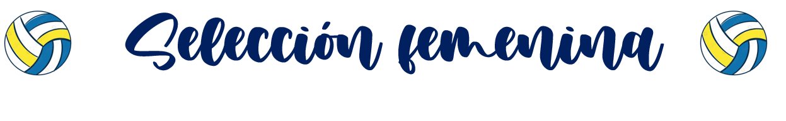
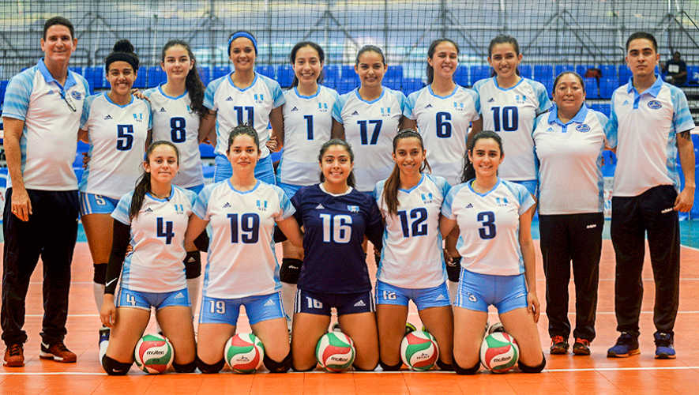
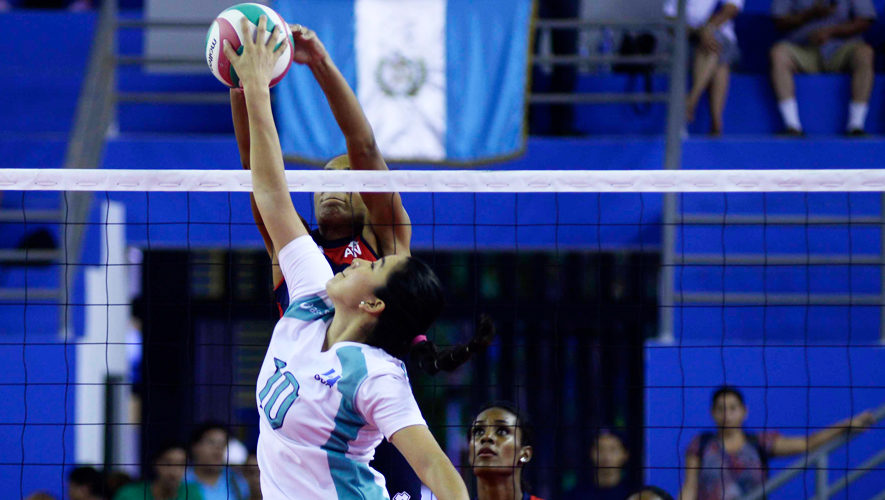

Se puede destacar que el voleibol en cualquiera de sus disciplinas, las mujeres han destacado grandemente en muchos de los torneos en los que participa la federación del voleibol, teniendo renombre alcanzando y superando a la rama masculina, por sus atletas destacadas que poenen en alto al país.
A continuación, las posiciones de la Liga Nacional General, hasta el 27 de Marzo del año 2,022 según ADVG.
División Mayor - Partidos de Clasificatoria |
|||
|---|---|---|---|
Posición |
Equipo |
Jugados |
Ganados |
1 |
AVANTI |
7 |
6 |
2 |
SMARBRAMS |
7 |
6 |
3 |
La sanarateca |
7 |
6 |
4 |
Zoom Arco 5-6 |
7 |
4 |
5 |
Arcadia Jumps |
7 |
3 |
6 |
Legends |
7 |
2 |
7 |
Tellioz |
7 |
1 |
8 |
Águilas |
7 |
0 |
Llevándose por delantera AVANTI, se ve reñida la competencia clasificatoria de este periodo en la división mayor en la ADVG.